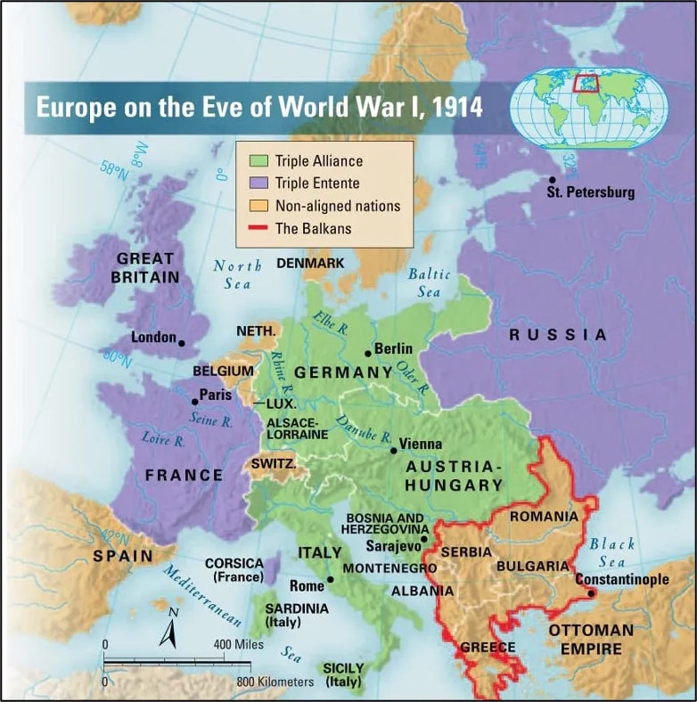
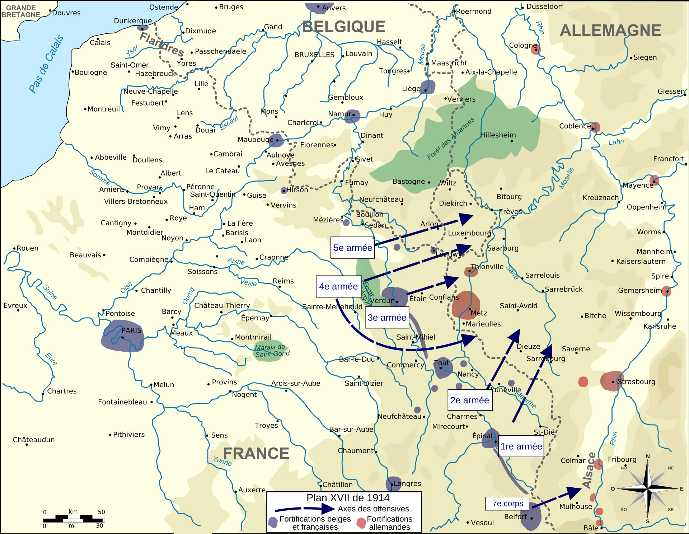
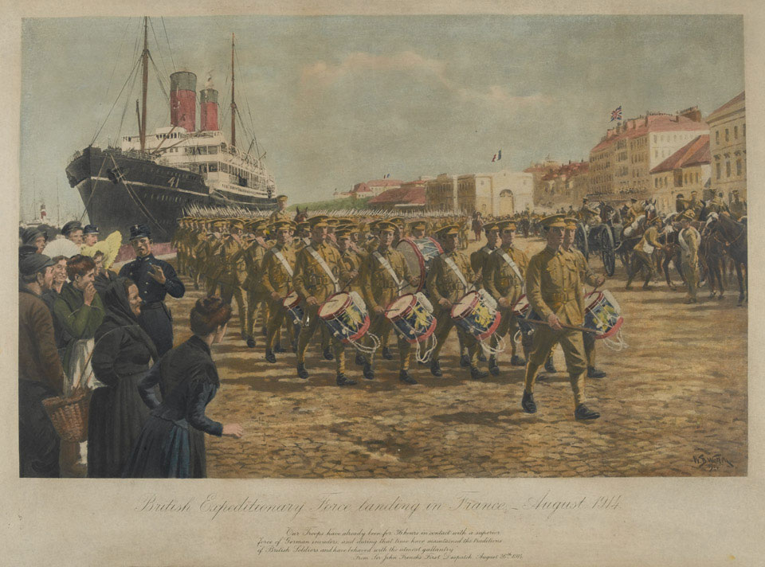
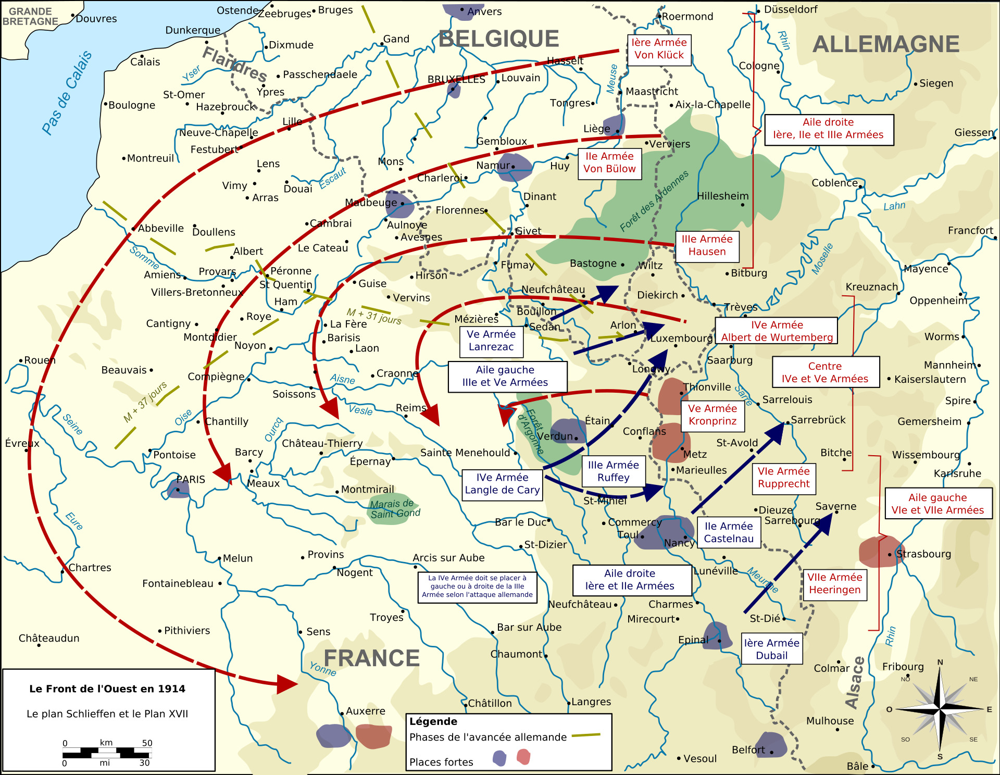
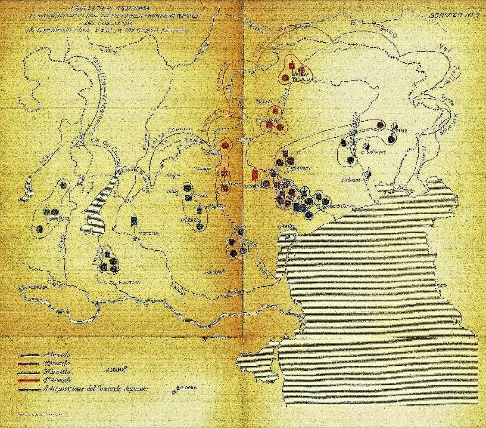
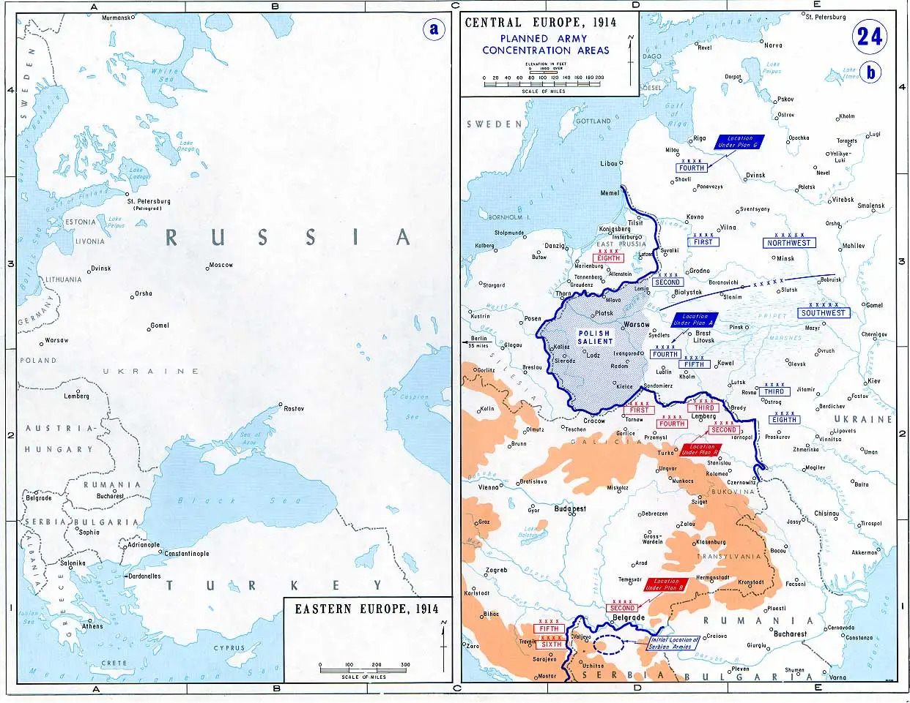
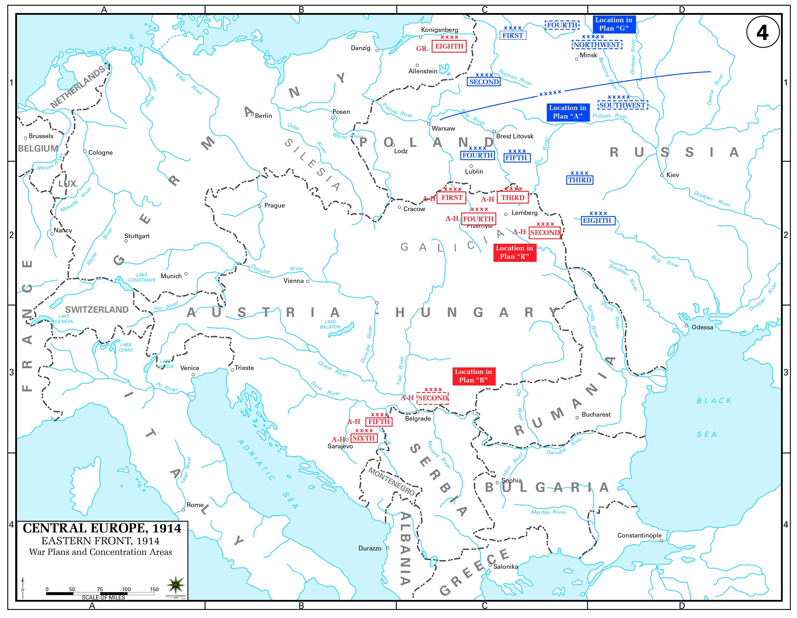

Карта військових союзів напередодні Першої світової війни
Джерело: Compass — World History Events
Франція

АнтантаВелика Британія

АнтантаНімеччина

Троїстий союзІталія

Троїстий союз → Нейтралітет у 1914 → АнтантаРосійська імперія

АнтантаАвстро-Угорщина

Троїстий союзПеревір себе
Питання для роздумів
Питання 1: Чому військовий план, який здавався логічним на карті, міг не спрацювати в реальній війні?
Підказка: На карті плану немає несподіваних подій, опору противника, помилок командування та проблем із постачанням. А тепер подумай: який із цих чинників найсильніше міг змінити хід наступу Німеччини в серпні 1914 року?
Питання 2: Чому Велика Британія, яка не планувала такої масштабної сухопутної війни, усе ж виявилася важливим учасником подій на Західному фронті?
Підказка: Подивись, через яку країну рухалася німецька армія та що сталося з її нейтралітетом. А тепер подумай: чому порушення нейтралітету Бельгії мало значення саме для Великої Британії?
Питання 3: Чому перші успіхи Німеччини у війні не означали, що План Шліффена спрацював?
Підказка: Порівняй мету плану з результатом перших тижнів війни. Німеччина мала не просто просунутися територією Франції, а швидко розгромити її армію. А тепер подумай: яка подія у вересні 1914 року остаточно показала, що швидкої перемоги не буде?